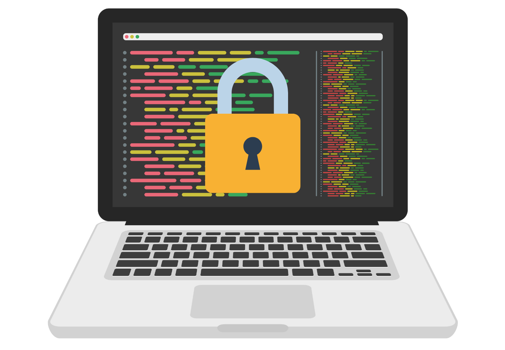

WHAT ARE THE DIFFERENCES BETWEEN OPEN SOURCE AND CLOSED SOURCE SOFTWARE?
OPEN SOURCE SOFTWARE (OCS)
With open source software, the source code is publicly available to anyone who wants it, and
programmers can read or change that code if they desire. Keep in mind that you don’t have to read or modify any code in
order to use an open source product.
- • User-Friendliness
Typically less user-friendly, but it can depend on the goals of the project
and those maintaining it.
- • Security
Source code is open for review by anyone and everyone. There is a widespread theory that more eyes on the code makes it harder for bugs to
survive. However, security bugs and flaws may still exist and pose significant risk.

CLOSED SOURCE SOFTWARE (OCS)
But with closed source software (also known as proprietary software), the public is not given access
to the source code, so they can’t see or modify it in any way.
- • User-Friendliness
Typically more user-friendly. As a for-profit product, adoptability and user experience
are often key considerations.
- • Security
The company distributing the software (i.e., software owner) guarantees a certain level of support,
depending on the terms of the SLA. Because the source code is closed for review, there can be security issues. If issues are found, the software distributor is responsible for fixing them.
 Read More
Read More